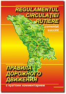

|
ПРАВИЛА
ДОРОЖНОГО ДВИЖЕНИЯ
УТВЕРЖДЕНЫ
Постановлением Правительства № 357 от 13 мая 2009 г.
(ОМ РМ, № 92 - 93, ст. 409 от 15.05.2009 г.)
ВВЕДЕНЫ В ДЕЙСТВИЕ
15 июля 2009 г.
С изменениями и дополнениями, внесёнными:
Постановлением Правительства № 931 от 31 декабря 2009 г.
(ОМ РМ, № 2 - 4, ст. 19 от 15.01.2010 г.)
Постановлением Правительства № 989 от 19 октября 2010 г.
(ОМ РМ, № 211 - 212/1100 от 29.10.2010 г.)
Постановлением Правительства № 494 от 8 июля 2013 г.
(ОМ РМ, № 146 - 151, от 12.07.2013 г.)
Внесённые изменения выделены синим цветом. |

|
Постоянно увеличивающееся в течение последних двух десятилетий количество транспортных средств диктует необходимость проведения в жизнь существенных изменений в сфере организации и регулирования дорожного движения, а также в сфере обучения участников дорожного движения на более высоком уровне.
Настоящий учебник содержит краткий комментарий к основному нормативному документу - Правилам дорожного движения, касательно обучения водителей транспортных средств, а также организации и систематизации дорожного движения.
Разработка нормативного документа, в который включены новые положения, а существовавшие ранее, заново отредактированы, приведены в соответствие с современными требованиями и с требованиями международных нормативных документов, ставит своей целью решение вышеуказанных проблем. Краткий комментарий к этому документу окажет помощь широкому кругу читателей, глубже вникнуть в сущность его новой редакции.
Таким образом, систематическое обращение к положениям предлагаемого учебника поможет начинающим водителям, а также и водителям уже имеющим опыт, предотвращать конфликты, спровоцированные критическими ситуациями в дорожном движении, и самим не стать их виновником, а кандидаты в водители, изучившие данный материал, смогут успешно сдать любой теоретический или практический экзамен.
Значение некоторых новых и заново отредактированных терминов.
В целях более правильного и точного понимания положений Правил, сформулированы новые и отредактированы ранее существовавшие термины. Примечательно, что настоящие Правила регламентируют действия участников дорожного движения, как на общественных дорогах, так и на прилегающих к ним территориях, тем самым значительно расширяется возможность применения положений Правил.
Заново отредактированный термин дорожно-транспортное происшествие открывает возможность вменить ответственность за нарушение норм безопасности дорожного движения не только участникам этого процесса, но и администраторам дорог, лицам, ответственным за эксплуатацию и техническое состояние транспортных средств предприятий, а также персоналу станций технического контроля, учитывая при этом, повышение уровня обеспечения безопасности дорожного движения.
Также в целях обеспечения безусловного подчинения участников дорожного движения сигналам и указаниям лиц, наделённых полномочиями по регулированию дорожного движения и контролю над ним, заново отредактирован термин регулировщик.
Манёвр, связанный с опережением транспортных средств, обусловлен определёнными факторами риска, вместе с тем, зачастую, из-за непонимания термина обгон, возникающие при обгоне конфликты истолковываются неверно, как лицами, контролирующими дорожное движение, так и самими его участниками, поэтому этот термин также был заново отредактирован.
С точки зрения безопасности, весьма важно, чтобы лица, находящиеся вне транспортного средства на общественной дороге были чётко обозначены. В этом смысле термин дорожное полотно способствует пониманию ситуации при которой водитель должен быть одетым в предохранительно-сигнальный флюоресцентно-световозвращающий жилет.
В целом, как новые, так и заново отредактированные термины, будут способствовать более глубокому усвоению материала, что бесспорно увеличит степень подготовки водителей, повысит их надёжность и, соответственно, уровень безопасности дорожного движения.
Организация и регулирование дорожного движения.
Приведение средств дорожной сигнализации и способов их применения в соответствие с международными требованиями, предоставит возможность лицам, ответственным за организацию дорожного движения в республике, осуществлять свою деятельность на международном уровне, тем самым способствуя более широкому развитию международного движения и, в перспективе, возможной интеграции в ЕС.
В частности, новые положения относительно регулирования дорожного движения посредством дорожных знаков, разметки и, в особенности, изменение режима функционирования светофорных объектов, несомненно, будут способствовать уменьшению количества конфликтов на перекрёстках. Эти положения и изменения особенно важны, поскольку именно на перекрёстках наиболее вероятна возможность возникновения конфликтных ситуаций.
Ограничение максимального предела скорости в населённых пунктах до 50 км/час, повлияет, как на безопасность движения, так и, что не менее важно, на увеличение пропускной способности дорог на участках с большой интенсивностью движения. Последний фактор будет способствовать повышению эффективности использования дорог и транспортных средств, а также снижению уровня загрязнения окружающей среды.
Положения относительно правильных действий участников дорожного движения и технические нормы по оснащению транспортных средств, участвующих в этом процессе.
Целью заново отредактированных и дополненных положений относительно правильных действий участников дорожного движения, а именно сигналов водителей транспортных средств, пользования внешними световыми приборами и приборами световой и звуковой сигнализации и маневрирования в различных ситуациях, является обеспечение безопасности движения. В особенности изменение и дополнение ряда требований относительно пользования внешними световыми приборами и приборами световой и звуковой сигнализации, несомненно, повысят уровень взаимного информирования участников дорожного движения.
Положение транспортного средства на дороге и намерения его водителя должны легко восприниматься другими участниками дорожного движения в любых условиях и ситуациях, что является решающим фактором в обеспечении безопасности дорожного движения.
Не менее важным является приведение технических норм по оснащению транспортных средств в соответствие с Предписаниями Европейской экономической комиссии ООН.
Сохранение траектории движения, торможение и ускорение транспортного средства происходят благодаря сцеплению между шинами и поверхностью проезжей части. В сложных и быстро меняющихся метео-климатических условиях (снег, дождь со снегом, обледенение, гололедица, влажное покрытие и т.п.) шины, с точки зрения безопасности движения, приобретают особое значение. Поэтому, в таких условиях очень важно, чтобы на транспортном средстве были установлены шины, соответствующие сезону, в котором это транспортное средство эксплуатируется.
Все изменения и дополнения, совершённые при разработке новых Правил дорожного движения предоставят возможность лицам, ответственным за организацию дорожного движения, осуществлять этот процесс на более высоком уровне. Участникам дорожного движения новые Правила создадут условия для правильных действий в различных дорожных ситуациях, а лица, уполномоченные контролировать этот процесс, руководствуясь новыми Правилами, смогут легко выявлять отклонения от норм безопасности дорожного движения.
Следует запомнить !!!
Превышение скорости и управление транспортным средством в состоянии опьянения, представляют серьёзнейшую угрозу для безопасности дорожного движения.
Хотя гражданское законодательство не определяет достаточно точно такое понятие, как средство повышенной опасности, тем не менее, транспортное средство содержит большое количество признаков, по которым оно может быть признано таковым. Например: механическое транспортное средство обладает таким качеством, каковым является высокая скорость движения, а водитель не в состоянии осуществлять в полной мере контроль в случаях, когда это транспортное средство, движется на высокой скорости в различных дорожных и метео-климатических условиях.
Статистика экономически развитых стран показывает, что 50% дорожно-транспортных происшествий с тяжёлыми и особо тяжёлыми последствиями совершают водители, управляющие транспортными средствами в состоянии опьянения.
С учётом этих обстоятельств Кодекс о правонарушениях и Уголовный Кодекс предусматривают весьма жёсткие наказания за превышение скорости, а также за управление транспортным средством в состоянии опьянения, при котором максимально допустимое содержание алкоголя в крови выше нормы или в состоянии опьянения, вызванного другими веществами.